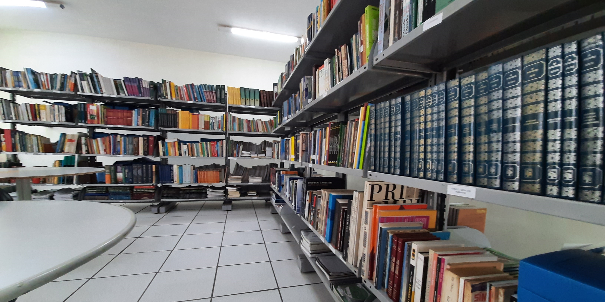

"É preciso que a leitura seja um ato de amor"
-Paulo Freire



"É preciso que a leitura seja um ato de amor"
-Paulo Freire
Biblioteca Etecarmine
A Biblioteca Etecarmine se encontra na escola ETEC Prof. Carmine Biagio Tundisi no município de Atibaia, com o uso excluzivo de alunos, professores e outros funcionários da escola.
É um lugar com incentivo a leitura que agrega na bagagem de conhecimento dos alunos. Muitos procuram a biblioteca nos intervalos e ao final das aulas, para ler um bom livro ou fazer pesquisas nos computadores.
Eventos
Durante o ano letivo, os coordenadores da biblioteca procuram organizar eventos que agreguem na bagagem cultural dos alunos da escola. Os eventos são uma maneira descontraida de ensinar, que proporcionam momentos marcantes para os alunos.
Saiba mais
Etec Atibaia
A Etec Prof. Carmine Biagio Tundisi oferece para toda a comunidade ensino médio e cursos técnicos gratuitos, presenciais e a distância.
Saiba mais